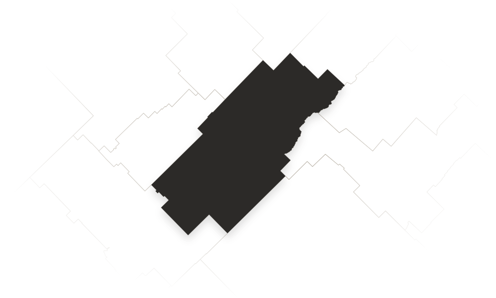

En la vidriera.
Cartas para pedir ahora.
Del pedido a la puerta.
Cabecera del partido.
Una comida, un comercio, una recomendación. Pedilo empieza en lo cotidiano.
Llegar a casa un viernes y tener las cartas de los locales de Bolívar en el celu para pedir en dos toques te cambia la noche. Rápido y sin vueltas.
Mariana R.Vecina de Bolívar · Pedido frecuente
Antes tenía que recorrer media ciudad o preguntar por grupos para saber qué negocio tenía stock. Con la vidriera encontrás enseguida lo que buscás acá.
Lucas B.Vecino de Bolívar · Comprador local
Sumar el local a Pedilo nos abrió una puerta directa a clientes nuevos que no pasan todos los días por la vereda. Es vidriera viva de la ciudad.
Marcelo G.Comerciante de Bolívar · Av. San Martín
Es la puerta de entrada a Pedilo Delivery y Pedilo Market en San Carlos de Bolívar. Desde acá elegís si querés pedir comida o conocer los comercios de la ciudad.
Entrá a Pedilo Delivery. Allí podés consultar las cartas y las opciones disponibles para hacer tu pedido.
Escribinos a hola@pedilo.net y contanos sobre tu negocio. Podemos conversar sobre cómo sumarlo a Pedilo.
Para consultas sobre Pedilo, escribinos a hola@pedilo.net. Si tu consulta es por un pedido, indicá el local y los datos del pedido para que podamos orientarte.
¿Algo más? Escribinos.